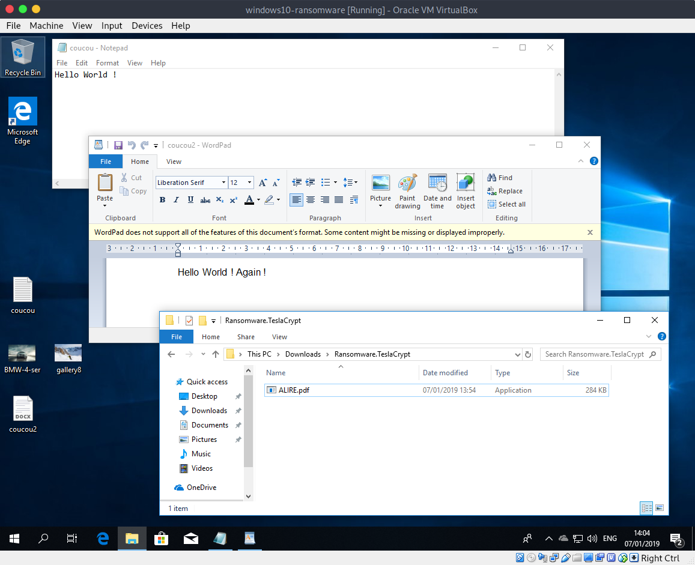
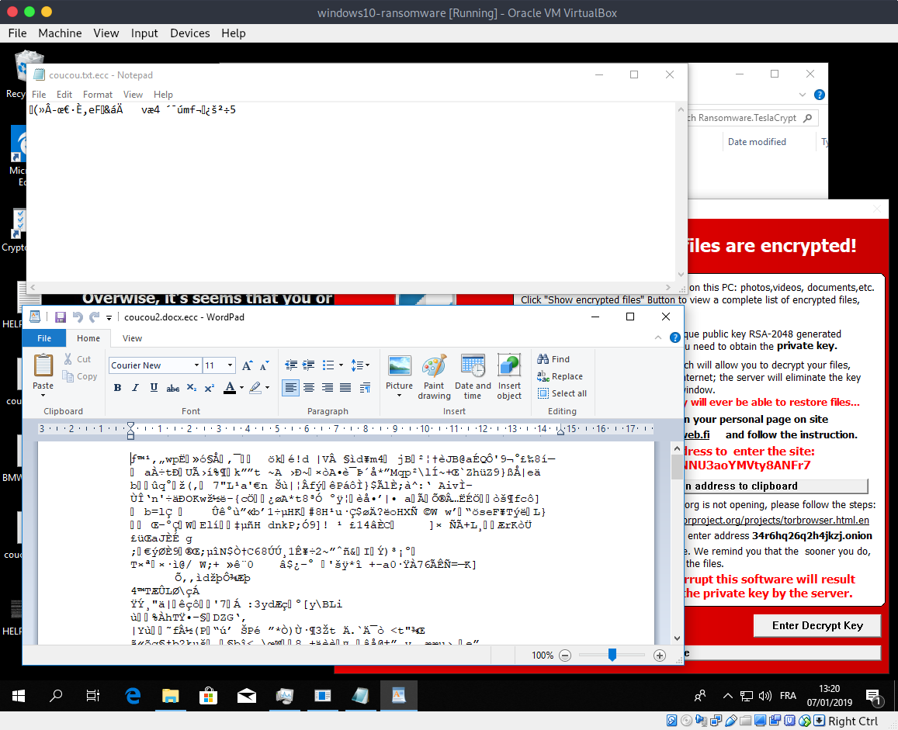
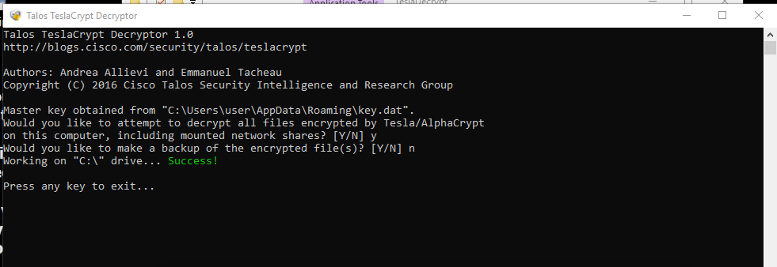
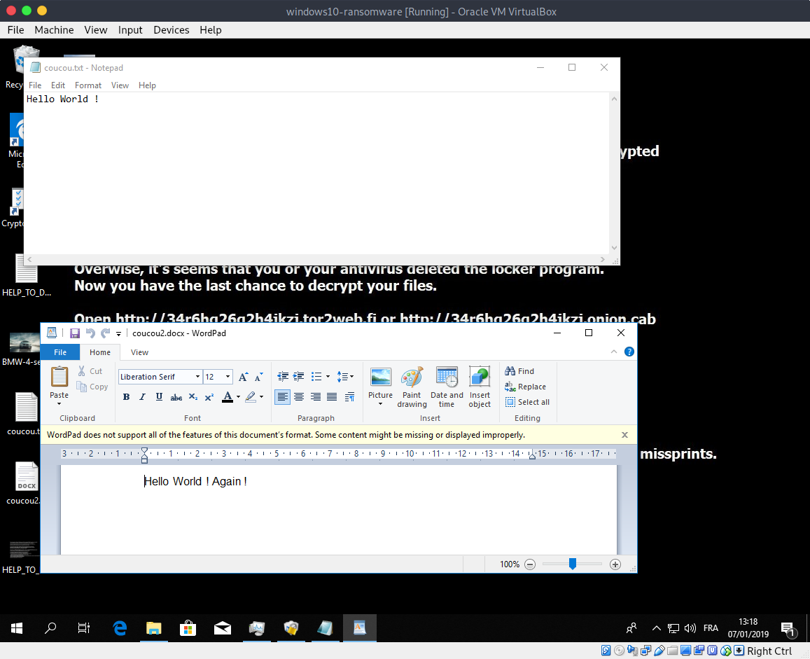
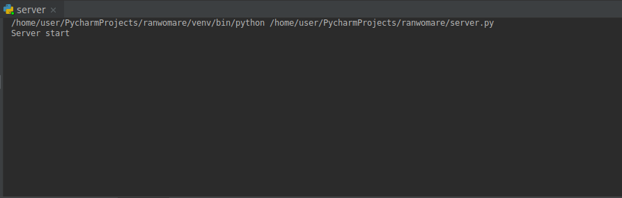
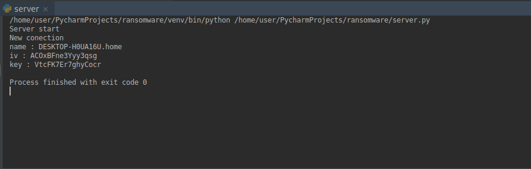
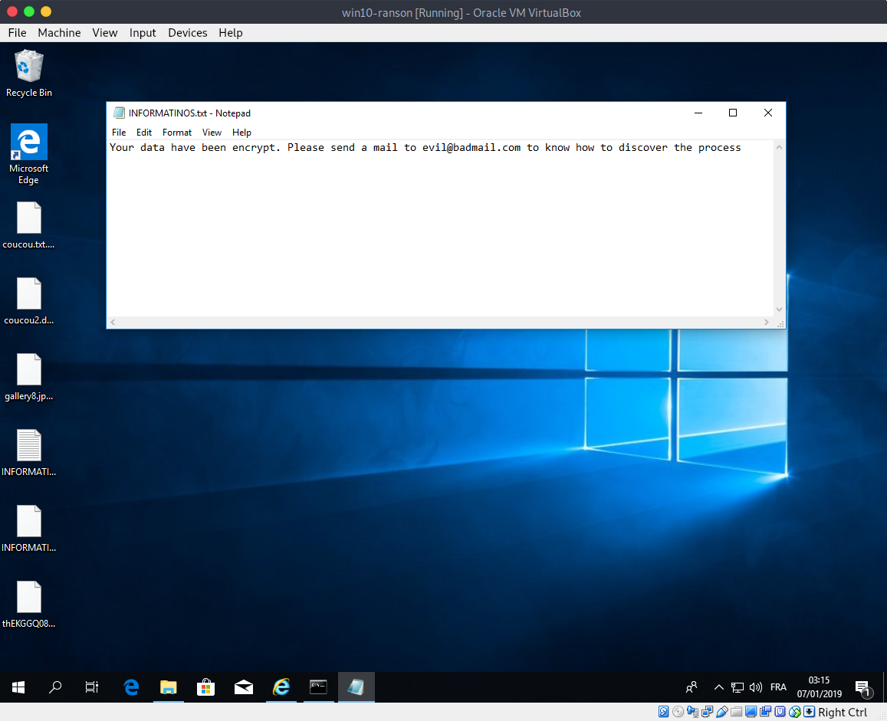

Ransomware
Le retour du Far-West
Il existe de nombreux types de malwares. Il y en a pourtant un qui a connu une très forte croissance ces dernières années. Nous avons encore en mémoire WannyCry, son prédécesseur Petya et ses successeurs NotPetya, ... D'autres connaissent peut-être TeslaCrypt, Locky, Cerber. Malheureusement, ils ne sont pas seuls. Ces malware prennent en otage vos fichiers et vous demandent une rançon. Bienvenue au Far-West, les ransomwares débarquent.
Définition
Le ransomware, ou rançongiciel, est un malware lucratif. Il va crypter les données de l’utilisateur ou verrouiller l’accès à la machine jusqu’au paiement d’une rançon qui est affichée à l’écran. Son but n’est pas de voler des données, il est de s’installer sur les machines aux moyens d’emails trompeurs, de liens, de fausses factures, …
Historique
L’histoire du ransomware remonte aux années 80. Plus précisément en 1989 où un certain Joseph L. Popp, académicien à Harvard qui devait participer à une conférence sur le SIDA (la World Health Organization), décida d’infecter 20 000 disquettes à destination des participants. Cette disquette prénommée « AIDS Information – Introductory Diskettes - Informations sur le SIDA - disquettes d’introduction » contenait en réalité le premier ransomware appelé « PC Cyborg Trojan ».
Le virus, une fois la disquette insérée, restait invisible sur l’ordinateur infecté jusqu’au 90ième redémarrage où il prenait vie en cryptant et cachant les fichiers et les répertoires et en promettant la restauration du système en échange d’un paiement d’une valeur de 189 $ à une société du nom de « Pc Cyborg Trojan » se trouvant au Panama.
Le trojan fut démantelé lorsque les chercheurs ont découvert que le chiffrement était symétrique, ce qui signifie qu’une seule clé est utilisée pour le chiffrement et le déchiffrement. Popp ne fut jamais condamné, il fut jugé psychologiquement irresponsable et promis de reverser les profits de son ransomware à la recherche contre le SIDA.
La cryptographie symétrique pour chiffrer les ransomwares a été mise au point par Adam L. Young et Moti Yung en 1996 pour un virus cryptographique conçu contre les Macintosh.
Il fallut attendre le début des années 2000, 2005 plus précisément, pour revoir apparaître le ransomware.
Vers 2009, étant donné que les ransomwares se faisaient vite éliminer par les antivirus et que leur rentabilité était faible, les hackers ont commencé à se dire qu’il y avait moyen de se faire beaucoup plus d’argent. C’est ainsi qu’est apparu le virus Vundo. Celui-ci infectait les ordinateurs pour ensuite rediriger la victime vers une fausse solution payante mais efficace. De plus la prolifération des plateformes de paiement en ligne anonymes permettait de recevoir de grandes sommes.
En 2013, une nouvelle forme de ransomwares à chiffrement fit son apparition. Le cryptolocker va changer la donne.
Premièrement en ne se préoccupant plus d’avoir l’air officiel et en envoyant un message très clair concernant leur intention sur l’ordinateur infecté indiquant que tous les fichiers seraient effacés si la rançon n’était pas payée dans les 3 jours.
Deuxièmement en utilisant des serveurs bien particuliers sur le réseau Tor permettant de générer des clés de chiffrement publiques et privées de 2048 bit pour affecter des extensions bien précises aux fichiers. La clé publique, cachée sur Tor, devenait presqu’introuvable, tandis que la clé privée était en sécurité auprès des hackers.
Troisièmement par sa manière de distribution. En effet, le cryptolocker se répandait via un Botnet, un réseau d’ordinateurs zombies, utilisé spécialement pour répandre des malwares sur le net. Le décryptage coutait 300$, ce qui a rapporté pas moins de 3 millions de dollars à ses développeurs.
CryptoLocker finira par tomber au profit de CryptoWall, utilisant les mêmes clés de chiffrement RSA et distribuée par phishing.
Mais contrairement à beaucoup de ransomwares ayant bien fonctionnés puis ayant été « démantelés », la menace CryptoWall continue de gronder.
Le futur de ransomware
Une des plus grosses craintes est que le ransomware puisse, dans le futur, s’attaquer à d’autres machines que les ordinateurs et les smartphones, du type de la vie quotidienne tels que les voitures, les maisons domotiques.
Une autre crainte serait que le ransomware se concentre davantage sur les appareils personnels et les utilisateurs aux moyens d’injections SQL pour crypter des bases de données.
Ce qui est sûr, c’est que le ransomware n’est pas prêt de disparaitre et sa croissance est exponentielle. Quelques chiffres : en 2011, au 1er trimestre, plus de 60 000 nouvelles attaques étaient détectées. Un an plus tard, ce chiffre dépassait les 200 000. Fin 2012, le marché noir du ransomware était estimé à environ 5 milliards de dollars.
Quelques types de ransomwares connus
GPCoder
Le GPCoder Trojan utilise du chiffrement RSA et était distribué en ligne pour infecter les systèmes fonctionnant sous Windows. Son but consiste à copier des fichiers contenant plusieurs extensions, les chiffrer pour ensuite supprimer la version originale. Les fichiers étant illisibles, un message sur l’écran venait rediriger l’utilisateur vers un fichier texte contenant la marche à suivre pour payer la rançon et «débloquer » les fichiers.
Archievus
La même année que GPCoder, Archievus fait son apparition avec le même chiffrement en 1024bit RSA mais s’occupe, lui, de chiffrer tout ce qui se trouvait dans les dossiers « Mes Documents » de l’utilisateur mais permettait ainsi de quand même pouvoir utiliser les autres fonctionnalités ou dossier de l’ordinateur. Cette fois, le cheval de Troie redirigeait la victime vers un site web où elle devait acheter un mot de passe de 30 chiffres pour débloquer ses fichiers.
WinLock
WinLock est le premier cheval de Troie de type « Locker ». Au lieu de crypter les fichiers de la victime, il est tout simplement impossible de se connecter à l’appareil. Le virus, imitant de vrais produits, copiait le système d’activation propre à Windows en demandant aux victimes de réactiver leur compte qui avait été désactivé en raison d’une fraude au besoin d’une clé d’activation achetable via un numéro de téléphone international pour régler le problème présenté comme gratuit mais qui finalement coutait énormément d’argent. WinLock n’utilisait donc pas le système de chiffrement. Le montant du butin est estimé à plus de 14 millions d’euros.
CryptoLocker
Ce virus est un cheval de Troie crypto-verrouilleur s’attaquant aux systèmes Windows et Android. Il se propage via des emails infectés se faisant passer pour des factures FedEX, UPS ou encore de banques. Une fois téléchargé, il chiffre les données personnelles au moyen d’une clé RSA, stockée sur un serveur pirate tel que Tor, et demande une rançon payable en Bitcoin augmentant au fil des jours. Il se propage sur le réseau.
Reveton
Les Ransomwares Police, « The Police Trojan », contaminaient les ordinateurs aux moyens de publicités malicieuses, de services de partages de fichiers ou encore de sites pornographiques. Un message était affiché à l’écran, prétendant venir d’une agence gouvernementale ou d’autorités policières, signalant que des preuves ont été trouvées sur l’ordinateur indiquant que celui-ci aurait servi à des fins illégales. L’ordinateur se retrouvait donc verrouillé jusqu’au paiement de « l’amende ». Pour plus d’authenticité et surtout pour que la victime prenne peur et se dépêche de payer avant de se rendre compte de l’arnaque, le logiciel n’hésitait pas à afficher l’adresse IP ou encore un aperçu de la webcam pour montrer que la victime était surveillée/enregistrée.
Reveton est le nom du Ransomware Police le plus connu. Il fut déployé en Europe à l’origine jusqu’à arriver au USA en faisant croire aux victimes qu’elles étaient sous la surveillance du FBI et devaient payer une amende s’élevant à 200$ au moyen de services de prépaiement.
WannaCry
En mai 2017, WannaCry se répand en Espagne et touche ensuite une douzaine de pays en seulement quelques heures. Quelques jours plus tard, un quart de million d’ordinateurs étaient infectés.
La particularité de WannaCry est qu’il ne vient pas du phising ou par un téléchargement mais c’est le premier ransomware à exploiter les vulnérabilités connues des ordinateurs. En effet, le but de WannaCry est de trouver via le net des ordinateurs fonctionnant toujours sur de vieille version de Windows Server, possédant une faille connue, de l’infecter puis de chercher d’autres machines sur le réseau possédant le même système d’exploitation afin de les infecter aussi.
Mais ce qui a été le plus dérangeant pour la population avec ce virus, c’est qu’en réalité, WannaCry utilise une faille bien connue que la NSA avait identifiée mais qu’elle a préféré garder sous silence afin de s’en servir comme arme.
NotPetya est un ransomware lancé après WannaCry et qui a exploité la même faille, mettant en évidence le fait que malgré les patchs rendu disponibles après WannaCry, il est difficile de garder les utilisateurs à jour.
Moyens de lutte
Les crypto-verrouilleur s’attaquent à certaines extensions de fichiers, aux disques durs, disques réseaux, USB et même parfois aux fichiers disponibles sur le cloud.
Les moyens de lutte de base se résument à :
- Faire des sauvegardes régulièrement sur des disques qui seront déconnectés du réseau immédiatement
- Mettre à jour votre système d'exploitation et vos logiciels
- Utilisez un anti-virus de bonne qualité sur vos ordinateurs et appareils mobiles
- Prendre garde des mails, même provenant de personnes de confiance, ainsi que des fichiers provenant d'internet
- Activer l'affichage des extensions de fichiers, une extension pourrait en cacher une autre
- Utiliser un VPN qui va rendre votre ordinateur plus difficile à cibler en masquant votre adresse IP, en chiffrant les données partagées en ligne
- Mettre les URL malicieuses sur liste noire
En cas d'infection :
- Déconnecter les appareils infectés du réseau le plus vite possible
- Consulter votre responsable informatique ou un informaticien et contacter les autorités compétentes
- Si vous avez des sauvegardes, utiliser les afin de restaurer votre système
- Si vous en avez pas, conserver vos disques durs et réinstaller proprement votre système. Des experts pourraient créer des solutions de déchiffrement
- Changer tous les mot de passe une fois le réseau nettoyé
- Mais par-dessus tout, ne surtout pas payer les rançons
En effet, rien ne vous garantit que l’hackeur vous fournisse les clefs de déchiffrement. Même s'il vous fournit le nécessaire, vous pourriez rester infecter par un malware et vous êtes connu comme étant une personne "vulnérable". De plus, le fait de payer la rançon finance les réseaux d'attaquants et les encourage à continuer de créer des ransomwares.
Europol, Kapersky Lab et McAfee ont développé une plateforme appelée No More Ransom permettant aux victimes de retrouver leurs données chiffrées sans avoir à payer.
Démonstrations
TeslaCrypt
TeslaCrypt est un ransomware qui avait sévit en février 2015 et en mai 2016, en visant principalement les joueurs de jeux vidéo. Il existe actuellement cinq versions de ce malware, apportant des corrections aux diverses failles de sécurité détectées en son sein. Parmi les modes d'infection employés, une vulnérabilité dans Adobe Flash était utilisée. Pour cette démonstration, nous allons nous faire volontairement infecter par TelsaCrypt, puis allons essayé de récuperer nos fichier à l'aide de no more ransom.
Pour commencer, nous créons quelques fichiers de test qui devrons être chiffrés par le ransomware. Nous avons un fichier texte, deux images et un petit document Word. Dans notre démonstration, le malware se nomme "ALIRE.pdf.exe". Remarquez que Windows cache l'extension par défaut, ce qui peut vite amener à confusion. Nous aurions aussi pu porter le vice en modifiant le logo par celui de fichier pdf. Nous cliquons naïvement sur ce fichier qui à l'air si intéressant.
Après une fraction de secondes, le fond d'écran est modifié et un message apparait à l'écran nous demandant de payer la rançon. Nous pouvons constater que nos fichiers ne sont plus lisibles.
Après avoir suivi les recommandations données en cas d'infection par un ransomware, nous nous empressons d'aller sur le site No More Ransom. Nous essayons d'abord de déterminer automatiquement le ransomware utilisé mais cette partie du site n'est actuellement pas fonctionnelle. Nous allons alors directement voir les différents outils de déchiffrement proposés. Nous en trouvons heureusement deux correspondant à notre cas. Nous choisissons celui proposé par Cisco, lisons la documentation et le téléchargons. Nous exécutons le fichier "TeslaDecrypt.exe" et répondons aux deux questions. Après quelques secondes, le script indique qu'il a terminé. Nous constatons alors avec soulagement que nos fichiers sont à nouveau accessibles, même s'il faudra remettre notre beau fond d'écran.
 Créons notre propre ransomware
Nous venons de tester un ransomware déjà existant, créons mainteant le notre afin de mieux comprendre son fonctionnement. Cette démonstration a été réalisée à titre informatif et sur un système informatique nous appartenant. Il est illégal de reproduire ceci vers tout autre système informatique. Des sites webs proposant de créer son propore ransomware gratuitement apparaissent régulièrement sur internet. Aussi bien dans les réseaux cachés tel que tor que sur le web "classique". Nous pouvons ainsi citer Philadelphia, Satan ou encore Tox. On peut même en créer depuis des applications mobile. Ceux-ci prennent simplement une petite commission sur les rançons. On apelle cette catégorie des Ransomware-as-a-service ou Raas. Cependant, ils ont tendance à disparaitre une fois qu'ils sont fortement connus et ne seront ainsi plus disponibles lorsque vous lirez ses lignes. Il reste alors la possibilité d'acheter ou de louer un ransomware sur des sites de ventes obscurs. Cependant, être son propre ransomware n'est pas non plus très difficile et c'est cette solution que nous allons vous proposer.
Pour cela, nous allons avoir besoin de python 3.7 avec le module PyCryptodome et allons exécuter le ransomware sur un client Windows 10. Seuls certains fichiers sur son bureau seront chiffrés. Nous créerons trois scripts. Deux seront pour le client, le premier chiffre et le seconde déchiffre. Le troisième fichier est, pour sa part, utilisé en tant que serveur sur une autre machine afin de récupérer la clef de chiffrement.
Pour installer PyCryptodome sur Windows, vous pouvez utiliser la commande :
python -m pip install pycryptodomeRemarque : Il se peut que sur les images, le fichier "encrypt.py" se nomme "chiffre.py"
Sur le serveur, nous démarrons le script server.py.
Nous modifions rapidement le fichier encrypt.py en spécifiant l'adresse ip du serveur. Pour cela, nous modifions la douzième ligne du fichier : HOST = "votre_ip". Nous partons du principe que cette opération à été réalisée par le hacker avant l'envoie du fichier. Ensuite, côté client, nous exécutons le ransomware à l'aide du script
Nous constatons que le serveur reçoit rapidement le secteur d'initialisation (iv) et la clef. De plus, les fichiers de l'utilisateur qui se trouvaient sur le bureau ont tous été chiffré et portent maintenant l'extension .lock.
 Apès avoir reçut la rançon, l'attaquant tramsmet le vecteur d'initialisation et la clef à la victime. Pour celle-ci, il lui faudra alors copier le script decrypt.py dans le dossier chiffré. Ensuite, il faut ouvrir une invite de commande et se déplacer dans le dossier adéquat. Il exécute la commande python decrypt.py iv_fournie clef_fournie afin de retrouver ses documents.
Conclusion
Les ransomwares sont fortement à la mode depuis 2016. En effet, ils sont simples à produire et peuvent rapporter beaucoup d'argent aux attaquants. Ils jouent sur les réactions humaines. Ils ont pourtant tendance à laisser leur place à d'autres malwares et attaques, tels que l'utilisation de cryptomineurs. Cependant, ils ne disparaitront pas et vont mener la vie dure à beaucoup de monde. Quelques petites mesures de sécurité peuvent permettre aux utilisateurs de contourner cette menace. Les premières défenses sont les mises à jour, un anti-virus, un pare-feu mais surtout, la vigilance envers les emails, liens internet et les fichiers qui en proviennent. Dans tous les cas, si vous êtes attaqué, il est important de ne pas paniquer et de ne surtout jamais se laisser avoir en payant la rançon, ce qui contribue à alimenter le marché des ransomwares.
Références
- https://en.wikipedia.org/
- https://fr.wikipedia.org/
- hhttps://www.nomoreransom.org/
- https://github.com/ytisf/theZoo
- https://www.kaspersky.fr/blog/ransomware-blocker-to-cryptor/5777/
- https://www.kaspersky.fr/resource-center/definitions/what-is-ransomware
- https://fr.vpnmentor.com/blog/histoire-de-la-menace-ransomware-passe-present-et-futur/
- https://www.cnetfrance.fr/produits/guide-protection-fichiers-ransomware-39836850.htm